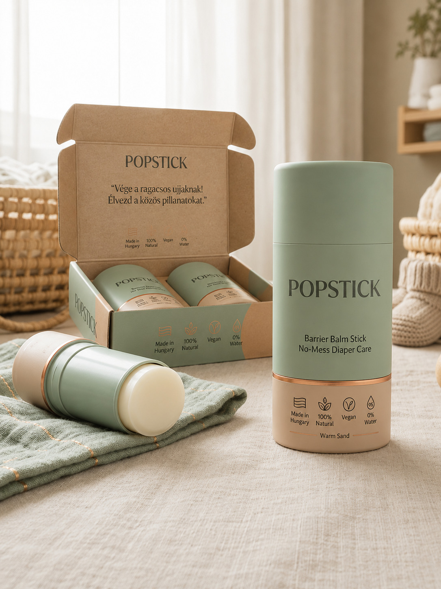

Maszatmentes
Kevesebb ragacs, tisztább kéz, gyorsabb pelenkázás.
POPSTICK
Pelenkázás maszatmentesen,
natúr gondoskodással.

Koncepció
A Popstick célja, hogy a popsikrém használata gyorsabb, tisztább és kényelmesebb legyen. Nem kell kézzel belenyúlni, nem kell maszatolni, és útközben is egyszerűbb lehet a pelenkázás.
Kevesebb ragacs, tisztább kéz, gyorsabb pelenkázás.
Letisztult, tudatos babaápolási koncepció.
Táskába dobható, praktikus, modern kiszerelés.
Early access
Iratkozz fel, és elsőként értesítünk a Popstick indulásáról.
A feliratkozással hozzájárulsz, hogy értesítést küldjünk a Popstick indulásáról.